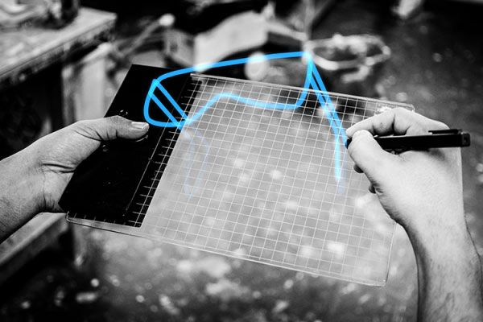
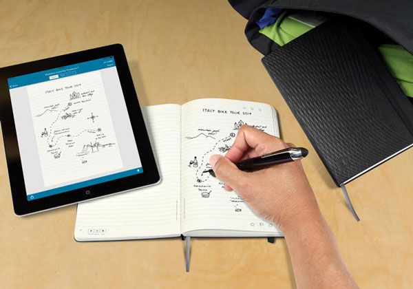

テクノロジーの発展に伴い、人々は時代を先取りした何かを生み出そうとし始めました。この過程で無視できない問題は、ユーザーインターフェース（UI）デザインをどのように扱うべきかということです。優れたユーザーインターフェースは、ユーザーと製品の間で優れたインタラクションを実現できます。例えば、Material Designなどです。
先日、海外メディアのfastcodesignが2014年のベストUIデザインをまとめました。その中には、目を見張るようなデザインがいくつかあります。一緒に見ていきましょう。
GravitySketch 3Dバーチャル画板

GravitySketchは、デザイナーがいつでもどこでも「空中で作業する」ことを可能にします。ユーザーは3Dメガネを着用する必要があり、完全に平らなボード上に3D画像を描くことができます。描画中、ユーザーは自由にドローイングボードを回転させて、絵の背面、底面、上部の領域を構図できます。3Dプリンターとの違いは、画像が「空中」に存在することです。
RoomAlive 体感システム

簡単に言うと、RoomAliveはマイクロソフトが開発した「プロジェクター+Kinect」のモーションセンサー周辺機器で、テレビ画面の画像を壁に投影できます。部屋の周囲の壁の「周辺画像」はリアルタイムでプレイヤーを取り囲み、Kinectは深度センシングカメラシステムとしてプレイヤーの動きを追跡します。想像してみてください。前方の標的に狙いを定めているとき、突然振り返ると背後から忍び寄る敵がいるのです。まるで実写版CSをプレイしているようではないでしょうか？
Thumbles ピクセルボタン

Thumblesは、Patten Studioの研究者James Patten氏が自社開発のSensetable技術を利用して設計したヒューマンコンピューターインタラクションインターフェースです。実際、タッチスクリーン上の各ボタンは、画面の背後に隠れた小さなピクセルです。物理ボタンが追加されることで、操作の快感が得られます。Thumblesは画面上の要素のマウスを直接制御でき、画面の背後にあるピクセルを再配置・再結合させることさえできます。
具体的にどんな役割があるのかは言えませんが、見た目がとてもかっこいいですよね。
InkとSlideハードウェアシリーズ

マウスとキーボードが入力デバイスの要件を満たせなくなったとき、InkとSlideハードウェアシリーズが登場しました。これはAdobe初のハードウェア製品です。InkはBluetoothペンで、Slide定規と組み合わせてタブレット画面上にデジタルラインを描きます。
SmartWalk スマート歩行システム

SmartWalkは方向音痴の人々にとっての福音です。車両の動的情報を歩道の路面にリアルタイムで表示でき、歩行者に特定の場所への具体的なルートと距離を伝えることもできます。しかし、これは歩きながらスマートフォンを見下ろす理由になるべきではありません。
Livescribe ノートブック

このデジタル時代において、タブレットは絵画の未来となるでしょう。紙に絵を描いているときに、その作品をタブレット画面にも表示させる方法はないでしょうか？Livescribeノートブックならそれが可能です。Livescribeノートブックにペンで絵を描くと、タブレット上のさまざまなプログラムを使って作品を加工したり修正したりできます。
BIRDLY シミュレーター

2015年には、Facebook、Samsung、Sony、さらにはMicrosoftが仮想現実の分野に参入するのを目にするでしょう。名前の通り、このシミュレーターは鳥の感覚を味わわせてくれます。VRヘッドセットを装着し、両手を機械の鳥の骨格に固定して、自由に飛びましょう。
出典：威鋒網